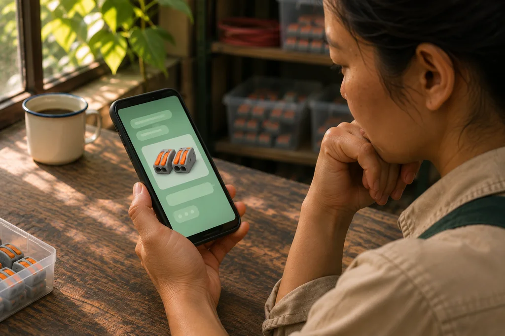
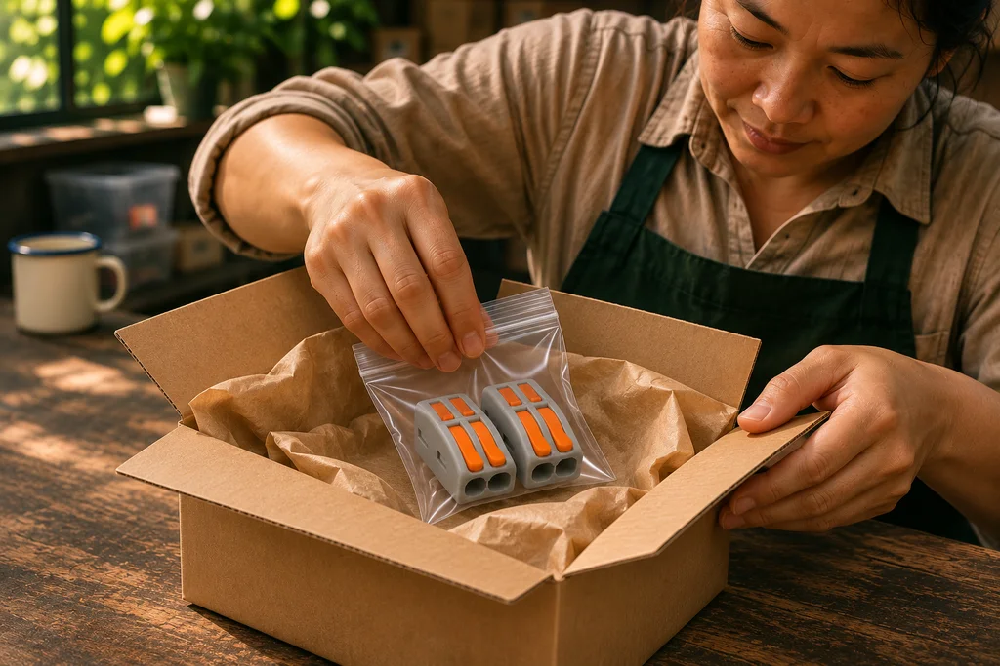

01 · 示例订单 · PS-0124
顾客提出询问
顾客询问两只 SPL2 连接器。商家记录商品与数量，并询问选择自取还是送货。
已记录商品与数量 · 领取方式待确认
一张订单，更清楚的旅程
先看一张示例订单，再了解我们怎样一起合作。

01 · 示例订单 · PS-0124
顾客询问两只 SPL2 连接器。商家记录商品与数量，并询问选择自取还是送货。
已记录商品与数量 · 领取方式待确认

02 · 示例订单 · PS-0124
顾客选择自取。商家检查需求并确认订单，然后才开始打包。
已确认自取 · 由人员审核

03 · 示例订单 · PS-0124
团队根据已核对的资料，准备并打包两只连接器，让交接更清楚。
两只连接器 · 已确认订单

04 · 示例订单 · PS-0124
包裹已准备好，等待顾客领取。此示例中没有发生送货。
已打包 · 等待顾客自取
了解目标与工作流程。
确定问题、范围和下一步。
开发并检查约定的方案。
根据使用反馈持续改善。
告诉我们，你希望改善哪一个业务环节。